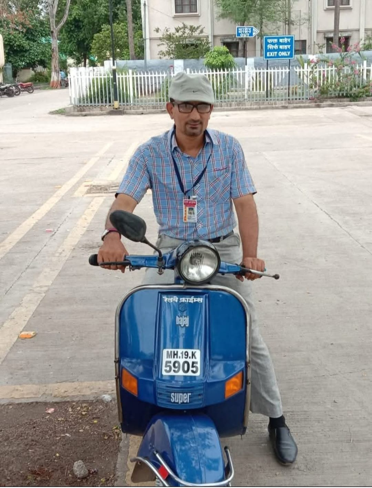

An independent platform bringing Railway news to every student — free, in Hindi, every 15 days.

Railway Crime News is an independent educational and informational platform created to provide Railway-related news, PDFs, and study materials — especially for students preparing for Railway and government exams.
This website is managed by Shakil Patel, who dedicates his effort to collecting, organizing, and publishing reliable Railway news PDFs in Hindi so that students across India can easily access authentic study resources for exam preparation.
Our goal is to make Railway information simple, accessible, and free for everyone. All PDFs shared on this website are intended strictly for educational purposes.
All content is curated for genuine learning and exam prep.
No fees, no walls. Knowledge is a right, not a privilege.
Fresh editions every 15 days so you never miss a thing.